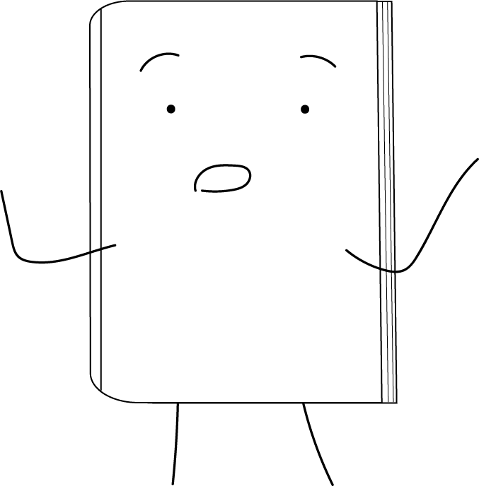
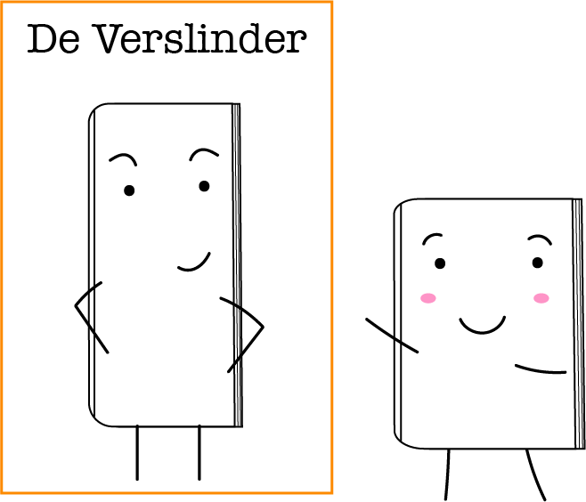
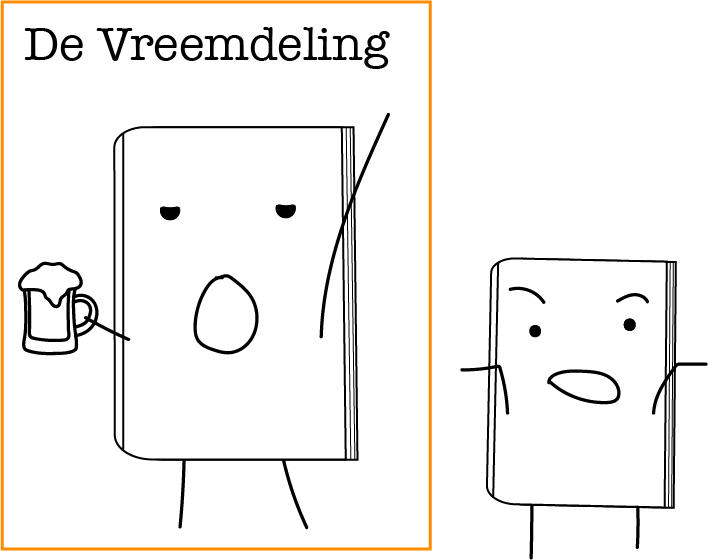
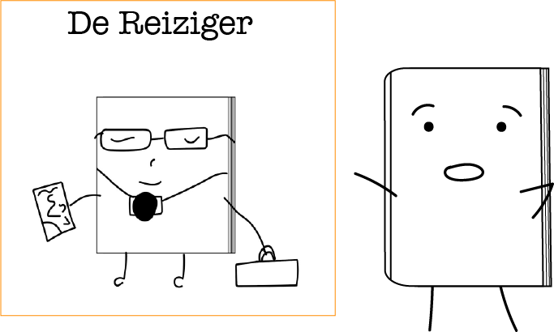

Nu ga ik jullie wat vertellen over een paar van de bewoners die, net zoals ik, in deze winkel wonen.

Dit is Eros. Hij is een Bouquet boek. Hij heeft al op meerdere plekken gewoond.
Vooral de dames boven de 60 zijn enorm dol op hem (geen idee waarom).

Dit is Hans. Ik begrijp nooit wat hij zegt, hij is één van onze Duitse boeken.
Ik zie hem vaak zitten met een biertje in zijn hand.

Dit is Wanda. Ze is een echte reiziger en heeft dan al veel landen en huizen gezien.
Ze zegt dat haar favoriete land Noorwegen was, omdat het daar lekker koel is.